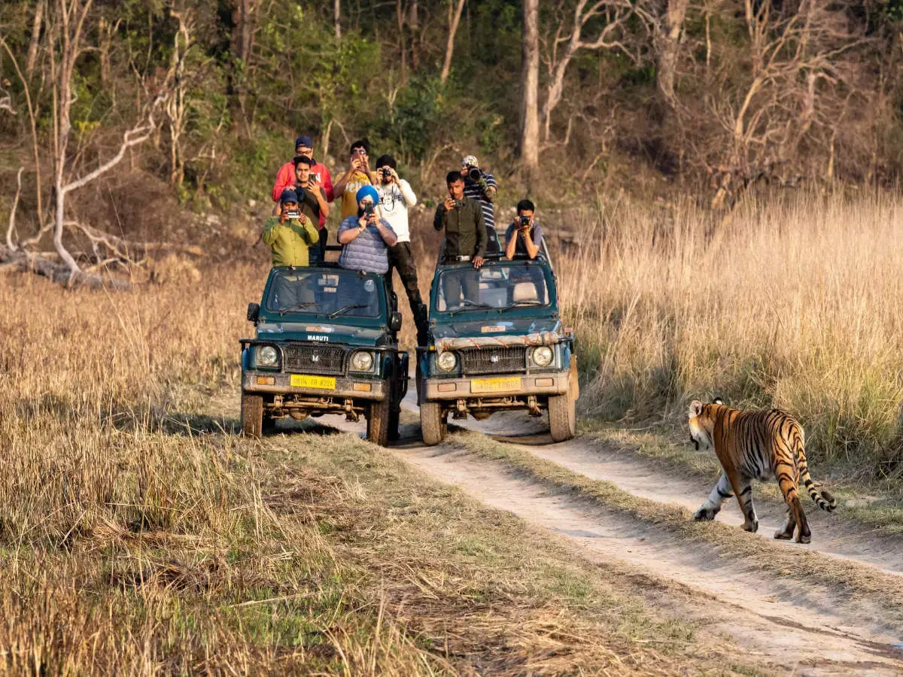
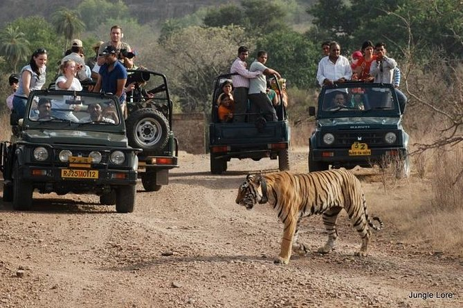

1. Jim Corbett National Park
Brief: Jim Corbett, located in Uttarakhand, is India’s oldest national park and is famous for its Bengal tiger population. The park offers a diverse landscape of grasslands, dense forests, and riverine areas, making it a haven for a variety of wildlife species. Apart from tigers, visitors can spot elephants, leopards, and various species of birds. The park is known for its exciting jeep safaris and serene nature walks, giving wildlife enthusiasts a unique experience amidst nature’s beauty.
Best Time To Visit: November to June
Budget: ₹3,000–₹6,000
2. Kaziranga National Park
Brief: A UNESCO World Heritage Site, Kaziranga National Park in Assam is renowned for its population of the one-horned rhinoceros. This park offers a unique wildlife safari experience, where visitors can see rhinos up close, as well as tigers, elephants, wild water buffaloes, and a diverse range of bird species. The park’s wetlands and grasslands create the perfect environment for these species to thrive, and a jeep safari or elephant ride here is a thrilling experience for nature lovers.

Best Time To Visit: November to April
Budget: ₹4,000–₹8,000
3. Ranthambore National Park
Brief: Ranthambore National Park in Rajasthan is one of the most popular safari destinations in India, famous for its rich tiger population. Visitors can enjoy thrilling jeep safaris through the park’s varied terrain, which includes dense forests, open meadows, and ancient ruins. Besides tigers, the park is home to other animals like leopards, sloth bears, and a wide range of birds. The park also features the historical Ranthambore Fort, adding an element of cultural exploration to the safari experience.
Best Time To Visit: October to April
Budget: ₹3,000–₹5,000
4. Sundarbans National Park
Brief: The Sundarbans, a UNESCO World Heritage Site, is the largest mangrove forest in the world and offers a unique eco-tourism experience. Located in West Bengal, the park is famous for its population of Royal Bengal tigers, which are known to swim in the rivers. Visitors can explore the maze of tidal waterways, dense forests, and islands by boat, making this a thrilling experience for wildlife lovers. The Sundarbans is also home to saltwater crocodiles, dolphins, and a wide variety of bird species.

Best Time To Visit: September to March
Budget: ₹4,000–₹7,000
5. Bandhavgarh National Park
Brief: Located in Madhya Pradesh, Bandhavgarh National Park is known for its high density of tigers, making it one of the best places in India to spot these majestic creatures. The park is spread across picturesque landscapes of rocky hills, dense forests, and grasslands. In addition to tigers, Bandhavgarh is home to leopards, wild boars, and a variety of birds. The park also has historical significance, with the ancient Bandhavgarh Fort standing atop a hill, offering a panoramic view of the park below.

Best Time To Visit: October to June
Budget: ₹4,000–₹8,000